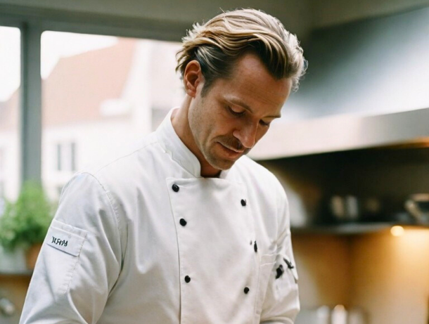

Bienvenue au quai Antique
Bienvenue sur le site de notre restaurant gastronomique situé au cœur de la magnifique ville de Chambéry. Le chef Arnaut Michant vous invite à découvrir un voyage culinaire mémorable.

Le chef Arnaud Michand vous invite au
Bienvenue sur le site de notre restaurant gastronomique situé au cœur de la magnifique ville de Chambéry. Le chef Arnaut Michant vous invite à découvrir un voyage culinaire mémorable.

Découvrez la richesse des saveurs avec nos plats élaborés à partir de produits frais et de saison, cueillis localement.
Bienvenue sur le site de notre restaurant gastronomique situé au cœur de la magnifique ville de Chambéry. Le chef Arnaut Michant vous invite à découvrir un voyage culinaire mémorable.